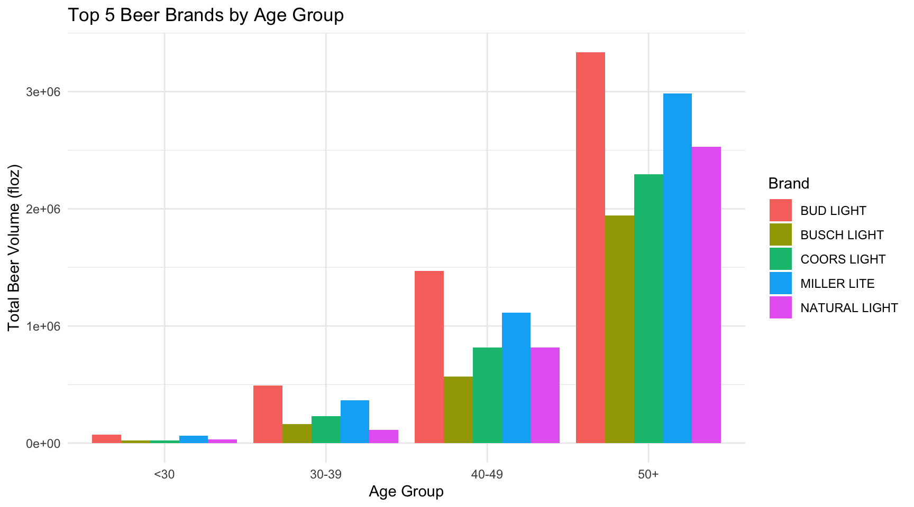
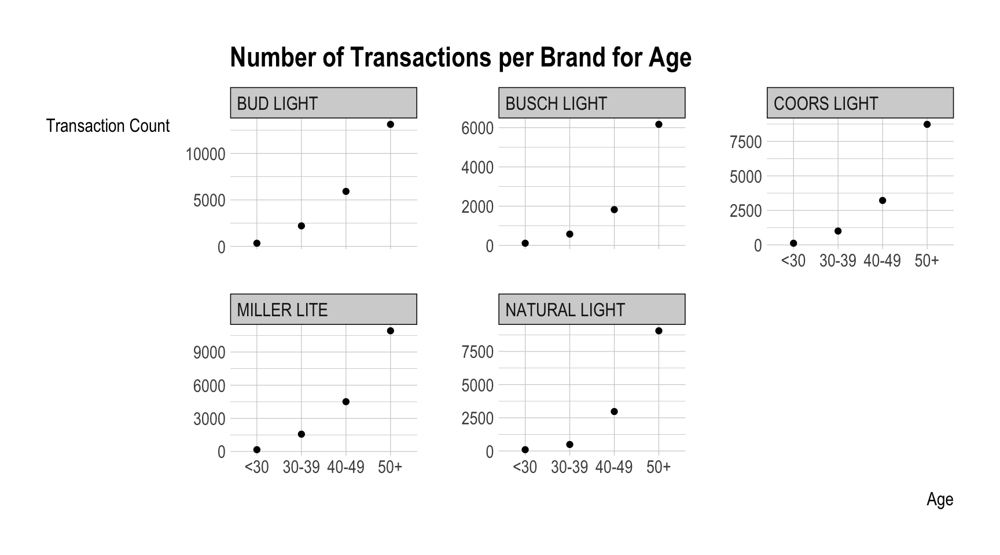

beer_data <- read_csv('https://bcdanl.github.io/data/beer_markets.csv') Beer Analytics
Data-Driven Mastery: Unlocking Business Potential
1 Introduction
Welcome to the fascinating journey through the intricate landscape of beer preferences across age groups! Embark on an exploration of our meticulously curated ‘beer_data’ set, a treasure trove of information on diverse beer brands. In this project, we delve into a data set containing information on different beer brands. Our focus is on understanding the relationship that age has among buying these brands, providing insights into the diverse world of beers. So, grab your virtual mug, and let’s raise a digital toast to the intricate tapestry of beer trends! 🍻 👏
2 Data
The data set ‘beer_data’ contains a curated selection of beer brands. Let’s begin by exploring the summary statistics to gain an initial understanding of the core characteristics that define these brews in the data set. 🍻
2.1 Summary Statistics
The ‘skim’ function is used to generate summary statistics, providing key insights into central tendencies, dispersions, and other relevant characteristics of the dataset. The ‘select(-n_missing)’ part excludes information about missing values.
skim(beer_data) %>%
select(-n_missing)| Name | beer_data |
| Number of rows | 73115 |
| Number of columns | 24 |
| _______________________ | |
| Column type frequency: | |
| character | 13 |
| logical | 6 |
| numeric | 5 |
| ________________________ | |
| Group variables | None |
Variable type: character
| skim_variable | complete_rate | min | max | empty | n_unique | whitespace |
|---|---|---|---|---|---|---|
| _purchase_desc | 1 | 12 | 29 | 0 | 115 | 0 |
| brand | 1 | 9 | 13 | 0 | 5 | 0 |
| container | 1 | 3 | 30 | 0 | 7 | 0 |
| market | 1 | 5 | 20 | 0 | 92 | 0 |
| buyertype | 1 | 4 | 7 | 0 | 3 | 0 |
| income | 1 | 5 | 8 | 0 | 5 | 0 |
| age | 1 | 3 | 5 | 0 | 4 | 0 |
| employment | 1 | 4 | 4 | 0 | 3 | 0 |
| degree | 1 | 2 | 7 | 0 | 4 | 0 |
| cow | 1 | 4 | 25 | 0 | 4 | 0 |
| race | 1 | 5 | 8 | 0 | 5 | 0 |
| tvcable | 1 | 4 | 7 | 0 | 3 | 0 |
| npeople | 1 | 1 | 5 | 0 | 5 | 0 |
Variable type: logical
| skim_variable | complete_rate | mean | count |
|---|---|---|---|
| promo | 1 | 0.20 | FAL: 58563, TRU: 14552 |
| childrenUnder6 | 1 | 0.07 | FAL: 68109, TRU: 5006 |
| children6to17 | 1 | 0.20 | FAL: 58155, TRU: 14960 |
| microwave | 1 | 0.99 | TRU: 72676, FAL: 439 |
| dishwasher | 1 | 0.73 | TRU: 53258, FAL: 19857 |
| singlefamilyhome | 1 | 0.81 | TRU: 59058, FAL: 14057 |
Variable type: numeric
| skim_variable | complete_rate | mean | sd | p0 | p25 | p50 | p75 | p100 | hist |
|---|---|---|---|---|---|---|---|---|---|
| hh | 1 | 17407721.61 | 11582147.34 | 2000235.00 | 8223438.00 | 8413624.00 | 30171315.00 | 30440718.00 | ▂▇▁▁▇ |
| quantity | 1 | 1.32 | 1.15 | 1.00 | 1.00 | 1.00 | 1.00 | 48.00 | ▇▁▁▁▁ |
| dollar_spent | 1 | 13.78 | 8.72 | 0.51 | 8.97 | 12.99 | 16.38 | 159.13 | ▇▁▁▁▁ |
| beer_floz | 1 | 265.93 | 199.52 | 12.00 | 144.00 | 216.00 | 360.00 | 9216.00 | ▇▁▁▁▁ |
| price_per_floz | 1 | 0.06 | 0.01 | 0.00 | 0.05 | 0.06 | 0.06 | 0.23 | ▃▇▁▁▁ |
# The summary statistics provide us with key insights into the central
# tendencies, dispersions, and other relevant characteristics of the dataset.3 Top 5 Beer Brands by Age Group
Now, let’s dive into the essence of age and beer brand dynamics. The code below calculates summary statistics (mean, median, max, min) of total beer volume by brand for each age group. The results are then arranged to identify the top 5 beer brands in terms of total volume for each age group.
age_brand_preference <- beer_data %>%
group_by(age, brand) %>%
summarize(total_floz = sum(beer_floz)) %>%
arrange(age, desc(total_floz)) %>%
group_by(age) %>%
slice(1:5)
age_brand_preference# A tibble: 20 × 3
# Groups: age [4]
age brand total_floz
<chr> <chr> <dbl>
1 30-39 BUD LIGHT 492750
2 30-39 MILLER LITE 363598
3 30-39 COORS LIGHT 227851
4 30-39 BUSCH LIGHT 162672
5 30-39 NATURAL LIGHT 111720
6 40-49 BUD LIGHT 1467536
7 40-49 MILLER LITE 1112282
8 40-49 COORS LIGHT 817071.
9 40-49 NATURAL LIGHT 815836
10 40-49 BUSCH LIGHT 567000
11 50+ BUD LIGHT 3336438.
12 50+ MILLER LITE 2985222
13 50+ NATURAL LIGHT 2530378
14 50+ COORS LIGHT 2294203
15 50+ BUSCH LIGHT 1943552
16 <30 BUD LIGHT 72340
17 <30 MILLER LITE 64768
18 <30 NATURAL LIGHT 31656
19 <30 BUSCH LIGHT 24072
20 <30 COORS LIGHT 22296 4 Visualization: Top 5 Beer Brands by Age Group
The visualization below transforms data into art, as ggplot2 weaves a bar chart depicting the top 5 beer brands for each age group based on total volume. Let the colors and shapes unveil the symphony of preferences!
library(ggplot2)
ggplot(age_brand_preference, aes(x = age, y = total_floz, fill = brand)) +
geom_bar(stat = "identity", position = "dodge") +
labs(title = "Top 5 Beer Brands by Age Group",
x = "Age Group",
y = "Total Beer Volume (floz)",
fill = "Brand") +
theme_minimal()
5 Transaction Counts per Brand for Age Groups
The next code segment calculates the number of transactions for each beer brand within different age groups. The results are then visualized using a scatter plot with facets for each brand.
beer_data$brand <- as.factor(beer_data$brand)
beer_data$age <- as.factor(beer_data$age)
transaction_counts <- beer_data %>%
group_by(age, brand) %>%
summarise(TransactionCount = n())
ggplot(transaction_counts, aes(x = age, y = TransactionCount)) +
geom_point() +
facet_wrap(~brand, scales = "free_y") +
labs(title = "Number of Transactions per Brand for Age",
x = "Age",
y = "Transaction Count")
6 Conclusion
In the symphony of sips and preferences, our exploration illuminates the nuanced dance between age and beer brands. These visualizations and analyses offer insights into consumer preferences for beer brands across different age groups. From the towering favorites in total volume to the intricate choreography of transaction counts, each sip tells a tale. As the curtain falls, these insights offer a glimpse into the kaleidoscopic world of beer preferences, where age becomes a defining note in the grand composition of consumer choices. Cheers to the intricate brew of data, age, and brand preferences! 🍻 ✨